Bordeaux & Saint-Émilion
Bordeaux announces itself at the Place de la Bourse, its 18th-century facade doubled in the mirroir d'eau laid out across the quay, the Fontaine des Trois Grâces rising nearby with cherubs riding dolphins at its base. The rest of the old town keeps up the pace: the Monument aux Girondins and its winged figure of Liberty, the Grand Théâtre presiding over the Place de la Comédie, a shopping street thick with Saturday crowds, the Cathédrale Saint-André's twin Gothic spires, the medieval Grosse Cloche's gilded clock face, an allegorical "Genius" standing guard at the Palais Rohan, and a quiet statue tucked in the back of the Jardin Public. A rainy evening slowed things down on a side street near the Impasse Saint-Lazare, and a stop at the Musée du Vin et du Négoce filled in the history behind every glass. A day trip out to Saint-Émilion found vineyards rolling toward the village and the barrel cellars of Château Cadet Bon, a Grand Cru Classé built into the hillside. Back in Bordeaux, the day closed the way so many of them did — two glasses of rosé, poured out on the balcony.
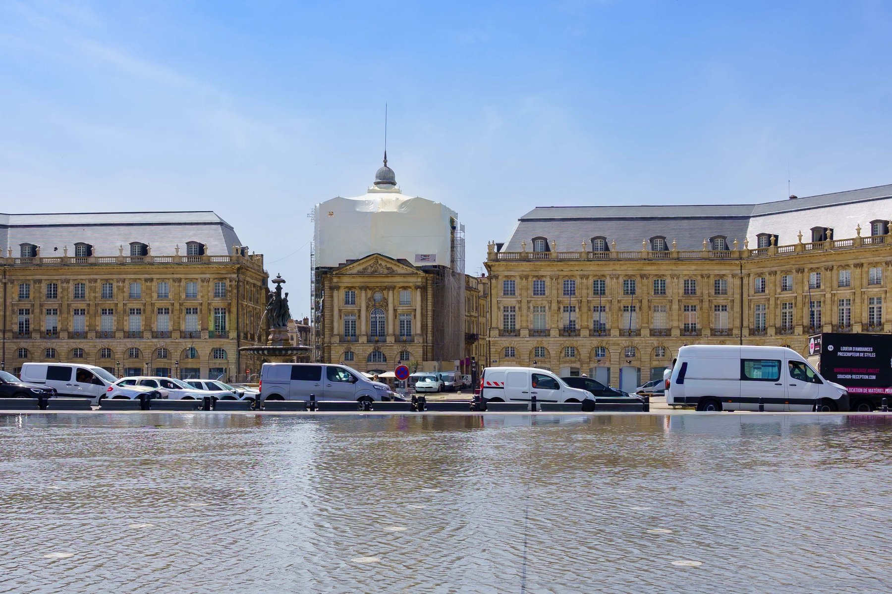
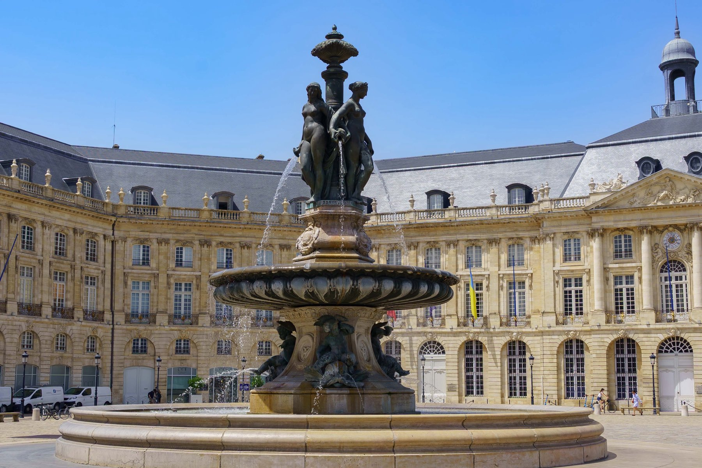
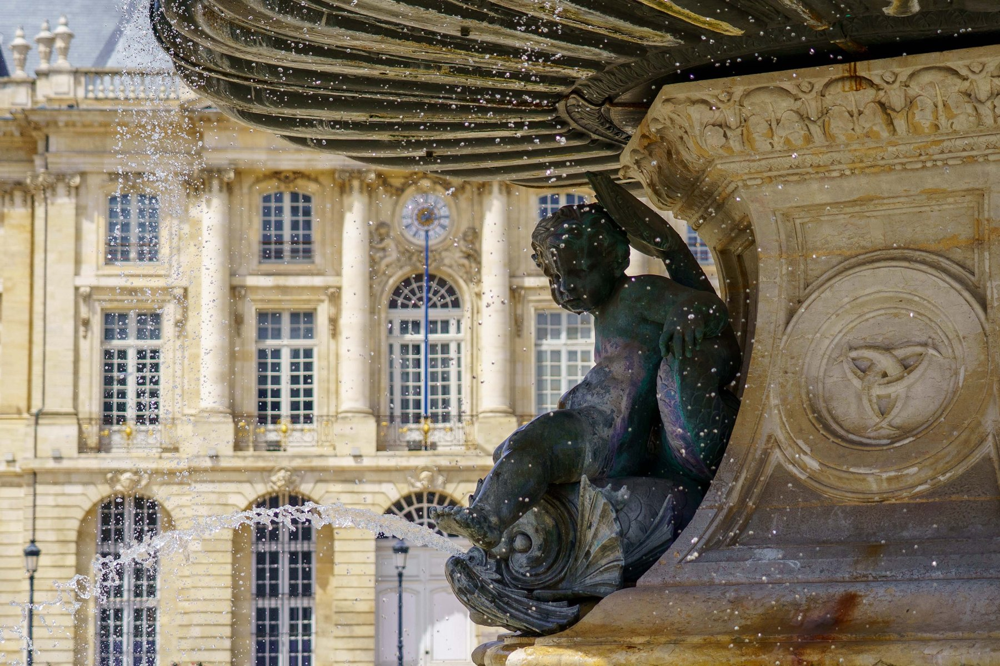
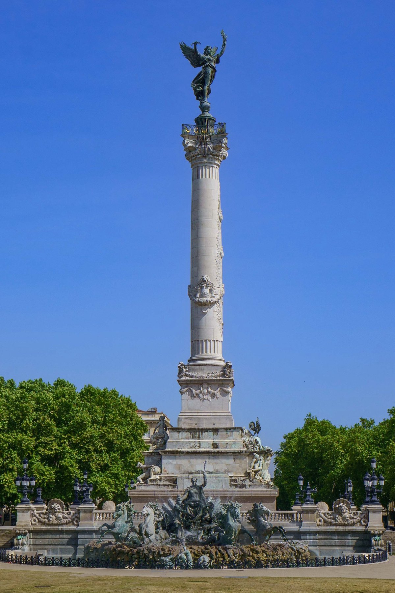
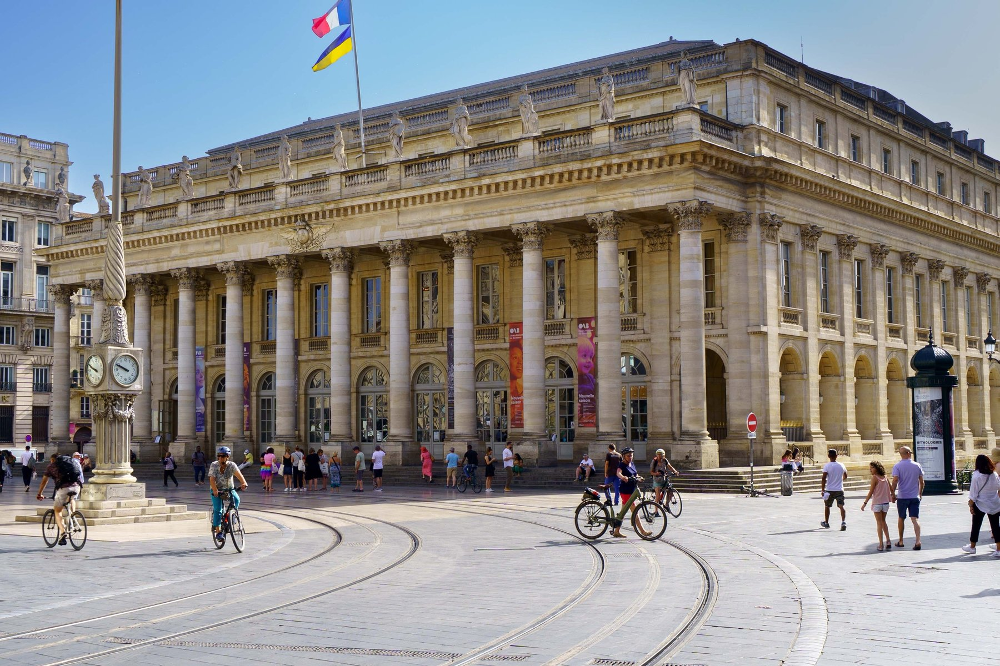
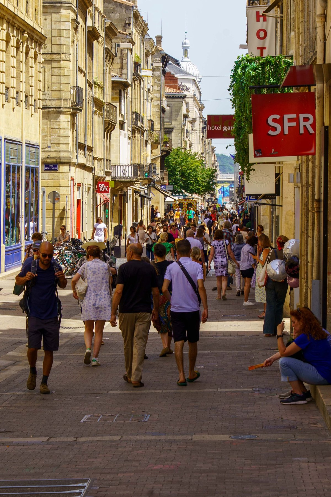
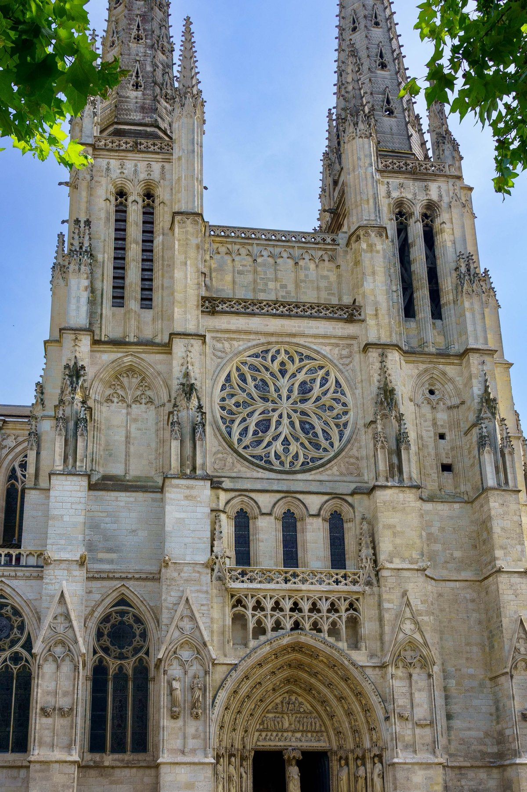
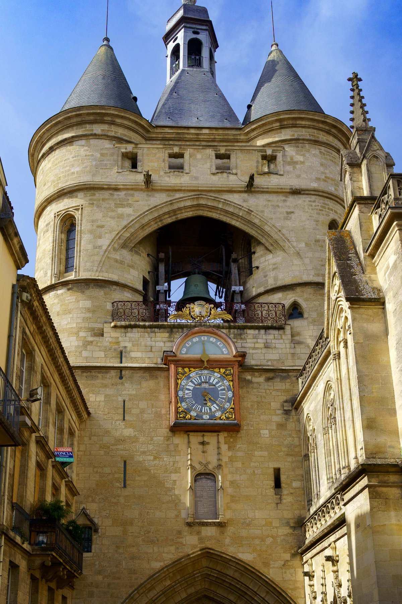
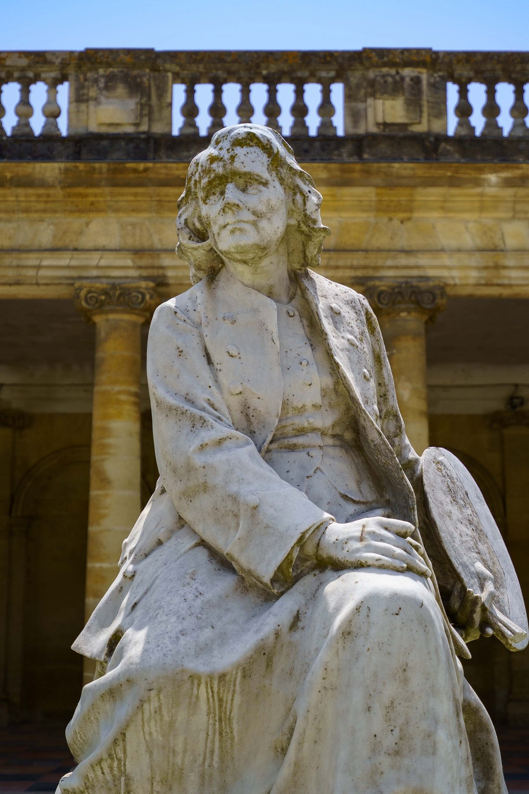
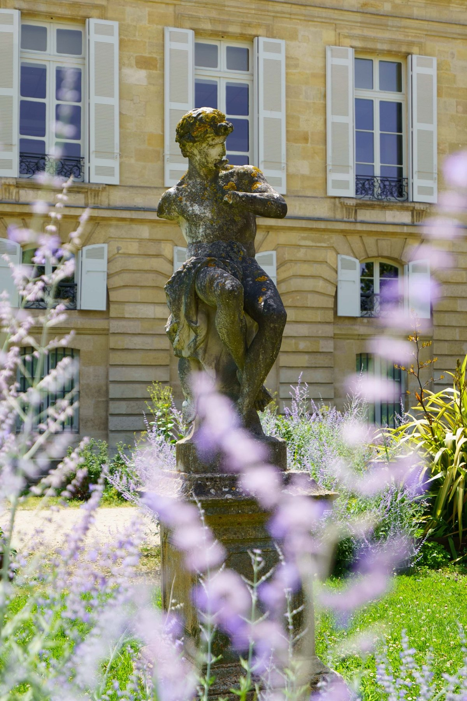
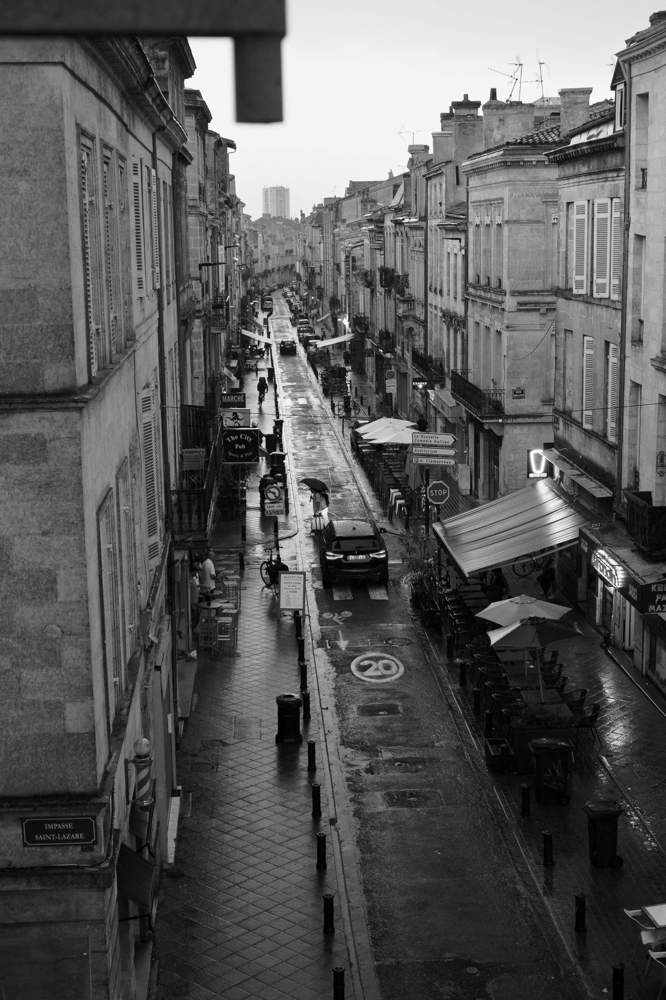
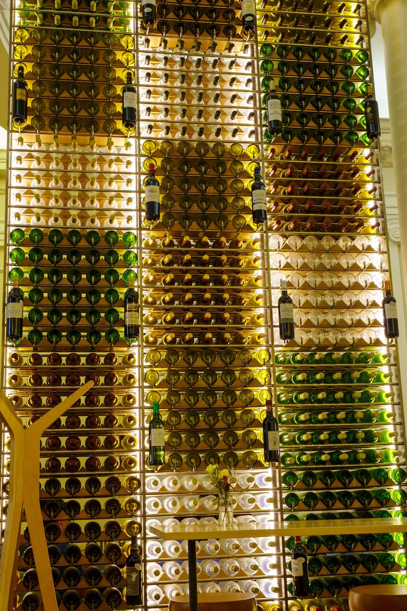
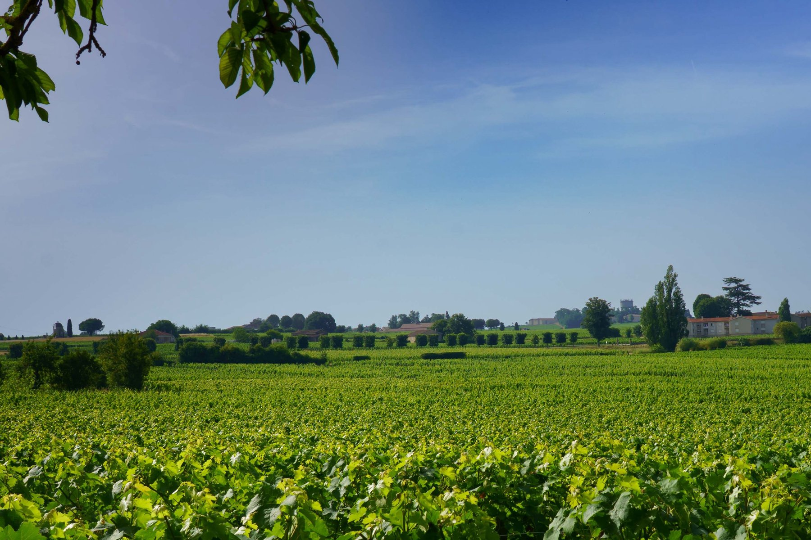

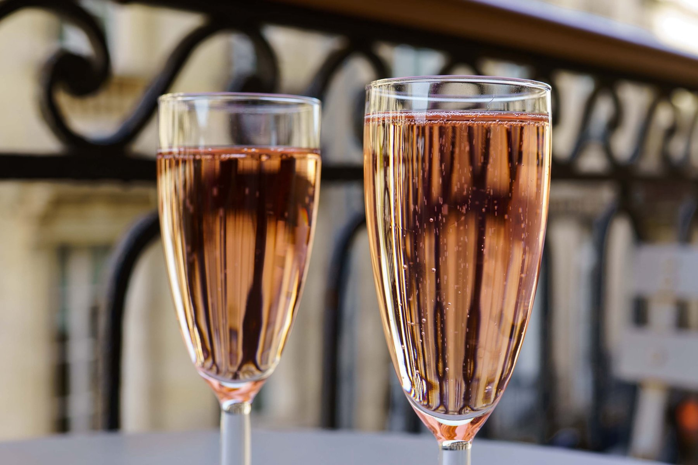